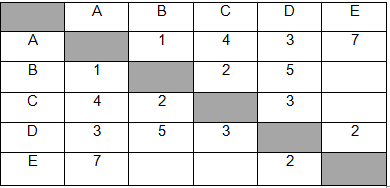
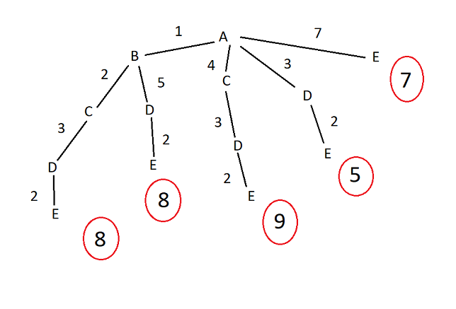

Между населёнными пунктами A, B, C, D, E построены дороги, протяжённость которых (в километрах) приведена в таблице.

Определите длину кратчайшего пути между пунктами A и Е, проходящего через пункт С. Передвигаться можно только по дорогам, протяжённость которых указана в таблице.
Каждый пункт можно посетить только один раз.
Для решения четвертого номера потребуется усвоить несколько вещей. Во первых передвигаться в пустые клетки запрещено. Во вторых для решения данного номера легче и правильнее всего использовать метод решения, называемый "деревом". Данный метод заключается в том, что можно легко и чёткко пройтись по каждому варианту событий.
- 
- 1) На решение видно не полное дерево, а самые правдоподобные варианты, если перебирать все то на экзамене можно потерять очень много времени.
- 2) Из решения ясно, что наименьшая длина это 5, но если внимательно прочитать условие, становится понятно, что путь должен проходить через пункт С, которого в дороге A-D-E нет.
- 3) Значит минимальный путь, подходящий условию это A-B-C-D-E, который равен 8. Как правило в таких заданиях самый короткий путь - это путь с наибольшим значением.